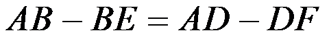
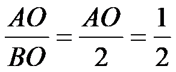

2019年北京市中考数学试题 · 数学解答题 第20题 · 对应解析
 20．如图，在菱形ABCD中，AC为对角线，点E，F分别在AB，AD上，BE=DF，连接EF．
20．如图，在菱形ABCD中，AC为对角线，点E，F分别在AB，AD上，BE=DF，连接EF．
（1）求证：AC⊥EF；
（2）延长EF交CD的延长线于点G，连接BD交AC于点O，若BD=4，tanG= ，求AO的长．
，求AO的长．
【解析】证明：∵四边形ABCD为菱形∴AB=AD，AC平分∠BAD
∵BE=DF，∴

，∴AE=AF∴△AEF是等腰三角形，∵AC平分∠BAD，∴AC⊥EF
（2）解：∵四边形ABCD为菱形，∴CG∥AB，BO=BD=2，∵EF∥BD
∴四边形EBDG为平行四边形，∴∠G=∠ABD，∴tan∠ABD=tan∠G=
∴tan∠ABD=

，∴AO=1